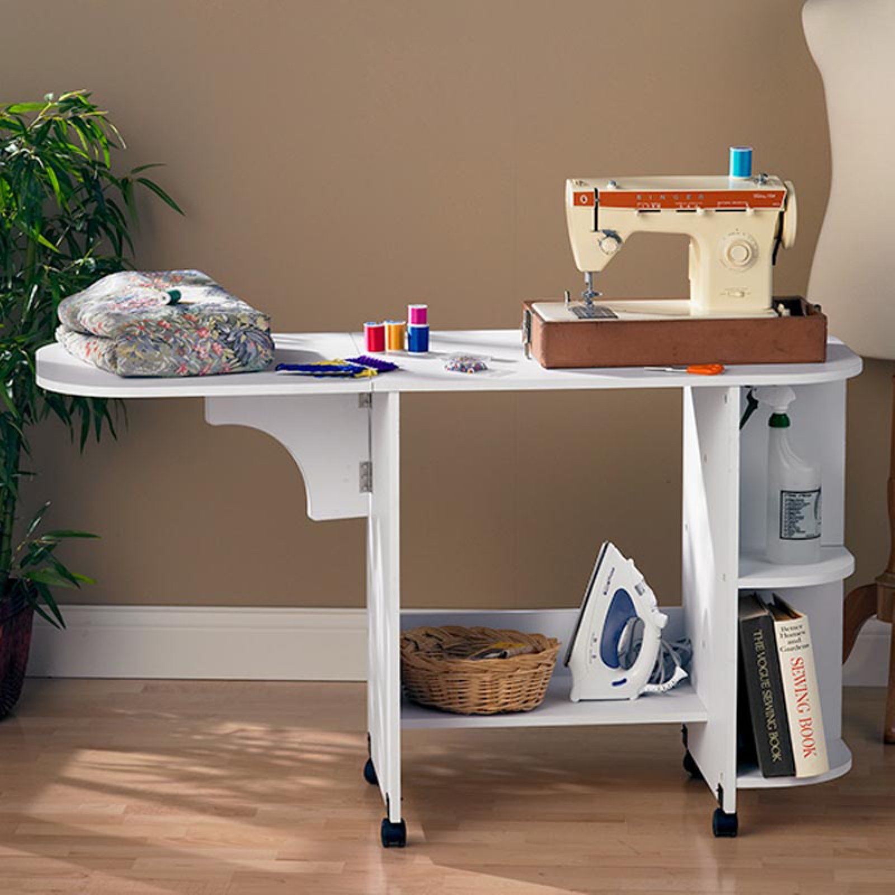

Extracuricular Activities

I am sure you have been wondering what other things I enjoy out aside working.
I enjoy sewing, knitting and spending time with my family. So if I am not at work, I will be at home busy with any of these activities.
I get several inspirations and materials from Hobby Craft.